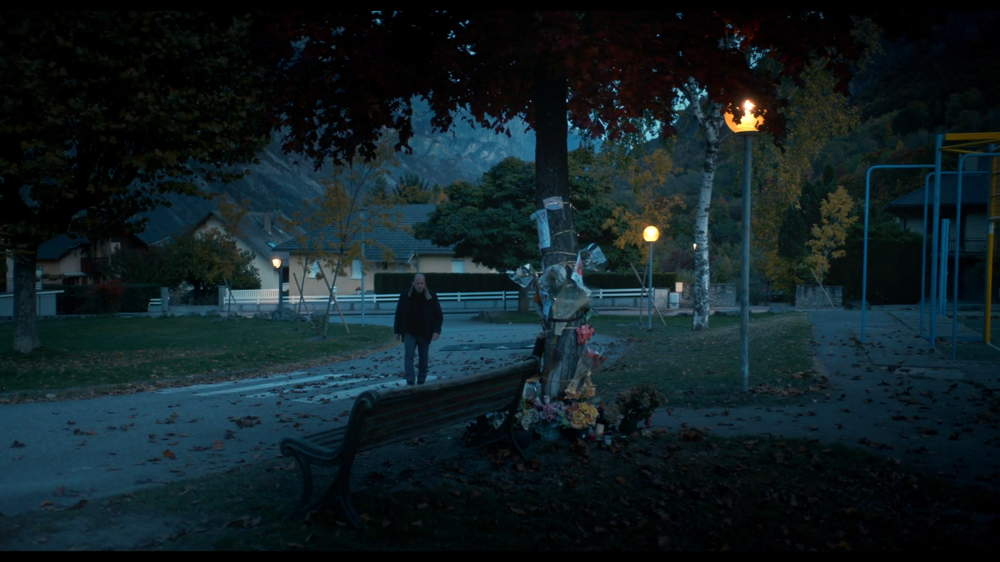
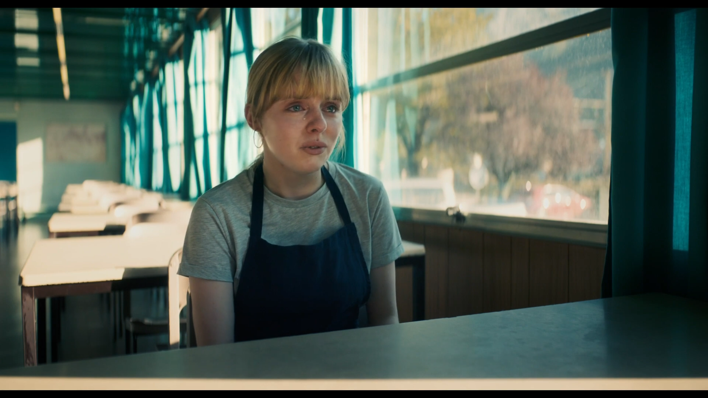
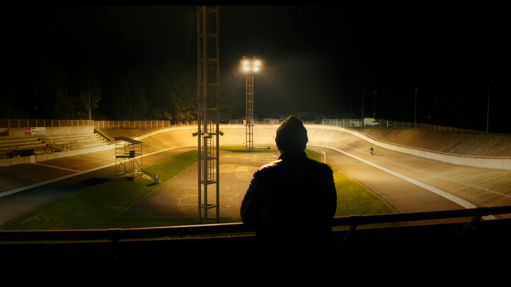

La Nuit du 12
Tournage Grenoble - 12/12/2012
À la PJ, chaque enquêteur tombe un jour ou l'autre sur un crime qu'il n'arrive pas à résoudre et qui
le hante. Pour Yohan, c'est le meurtre de Clara. Les interrogatoires se succèdent, les suspects ne
manquent pas, et les doutes de Yohan ne cessent de grandir. Une seule chose est certaine, le crime a
eu lieu la nuit du 12.



"La précision du tableau inscrit le film dans la lignée de L.627 de Bertrand Tavernier, modèle de ces films criminels réalistes qui montrent le travail quotidien de la police, très éloigné de la mythologie longtemps véhiculée par le cinéma. Le souci de vérité n'exclut pas l'ampleur et le réalisateur inscrit son récit dans ces paysages montagneux au climat changeant, dans cette vallée industrielle grise dont la beauté ne se donne pas facilement." - Positif